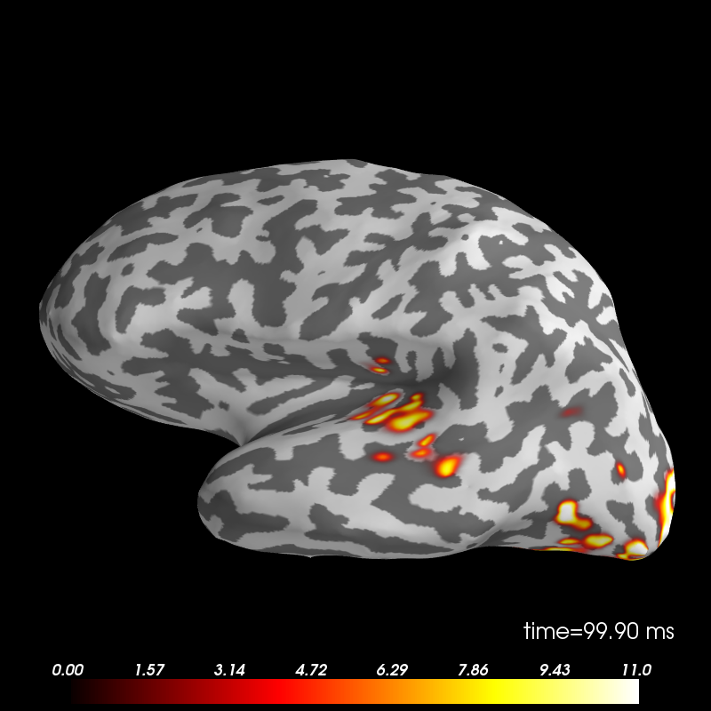

Decoding source space data¶
Decoding, a.k.a MVPA or supervised machine learning applied to MEG data in source space on the left cortical surface. Here f-test feature selection is employed to confine the classification to the potentially relevant features. The classifier then is trained to selected features of epochs in source space.
Script output:
Opening raw data file /data1/agramfort/work/src/mne-python/examples/MNE-sample-data/MEG/sample/sample_audvis_filt-0-40_raw.fif...
Read a total of 4 projection items:
PCA-v1 (1 x 102) idle
PCA-v2 (1 x 102) idle
PCA-v3 (1 x 102) idle
Average EEG reference (1 x 60) idle
Current compensation grade : 0
Range : 6450 ... 48149 = 42.956 ... 320.665 secs
Ready.
Reading 0 ... 41699 = 0.000 ... 277.709 secs...
[done]
High-pass filtering at 2 Hz
Created an SSP operator (subspace dimension = 3)
4 projection items activated
143 matching events found
No baseline correction applied...
Rejecting epoch based on EOG : ['EOG 061']
No baseline correction applied...
No baseline correction applied...
No baseline correction applied...
...
Python source code: plot_decoding_spatio_temporal_source.py
# Author: Denis A. Engemann <denis.engemann@gmail.com>
# Alexandre Gramfort <alexandre.gramfort@telecom-paristech.fr>
#
# License: BSD (3-clause)
import mne
import os
import numpy as np
from mne import io
from mne.datasets import sample
from mne.minimum_norm import apply_inverse_epochs, read_inverse_operator
print(__doc__)
data_path = sample.data_path()
fname_fwd = data_path + 'MEG/sample/sample_audvis-meg-oct-6-fwd.fif'
fname_evoked = data_path + '/MEG/sample/sample_audvis-ave.fif'
subjects_dir = data_path + '/subjects'
subject = os.environ['SUBJECT'] = subjects_dir + '/sample'
os.environ['SUBJECTS_DIR'] = subjects_dir
###############################################################################
# Set parameters
raw_fname = data_path + '/MEG/sample/sample_audvis_filt-0-40_raw.fif'
event_fname = data_path + '/MEG/sample/sample_audvis_filt-0-40_raw-eve.fif'
fname_cov = data_path + '/MEG/sample/sample_audvis-cov.fif'
label_names = 'Aud-rh', 'Vis-rh'
fname_inv = data_path + '/MEG/sample/sample_audvis-meg-oct-6-meg-inv.fif'
tmin, tmax = -0.2, 0.5
event_id = dict(aud_r=2, vis_r=4) # load contra-lateral conditions
# Setup for reading the raw data
raw = io.Raw(raw_fname, preload=True)
raw.filter(2, None, method='iir') # replace baselining with high-pass
events = mne.read_events(event_fname)
# Set up pick list: MEG - bad channels (modify to your needs)
raw.info['bads'] += ['MEG 2443'] # mark bads
picks = mne.pick_types(raw.info, meg=True, eeg=False, stim=True, eog=True,
exclude='bads')
# Read epochs
epochs = mne.Epochs(raw, events, event_id, tmin, tmax, proj=True,
picks=picks, baseline=None, preload=True,
reject=dict(grad=4000e-13, eog=150e-6))
epochs.equalize_event_counts(list(event_id.keys()), 'mintime', copy=False)
epochs_list = [epochs[k] for k in event_id]
# Compute inverse solution
snr = 3.0
lambda2 = 1.0 / snr ** 2
method = "dSPM" # use dSPM method (could also be MNE or sLORETA)
n_times = len(epochs.times)
n_vertices = 3732
n_epochs = len(epochs.events)
# Load data and compute inverse solution and stcs for each epoch.
noise_cov = mne.read_cov(fname_cov)
inverse_operator = read_inverse_operator(fname_inv)
X = np.zeros([n_epochs, n_vertices, n_times])
# to save memory, we'll load and transform our epochs step by step.
for condition_count, ep in zip([0, n_epochs / 2], epochs_list):
stcs = apply_inverse_epochs(ep, inverse_operator, lambda2,
method, pick_ori="normal", # saves us memory
return_generator=True)
for jj, stc in enumerate(stcs):
X[condition_count + jj] = stc.lh_data
###############################################################################
# Decoding in sensor space using a linear SVM
# Make arrays X and y such that :
# X is 3d with X.shape[0] is the total number of epochs to classify
# y is filled with integers coding for the class to predict
# We must have X.shape[0] equal to y.shape[0]
# we know the first half belongs to the first class, the second one
y = np.repeat([0, 1], len(X) / 2) # belongs to the second class
X = X.reshape(n_epochs, n_vertices * n_times)
# we have to normalize the data before supplying them to our classifier
X -= X.mean(axis=0)
X /= X.std(axis=0)
# prepare classifier
from sklearn.svm import SVC # noqa
from sklearn.cross_validation import ShuffleSplit # noqa
# Define a monte-carlo cross-validation generator (reduce variance):
n_splits = 10
clf = SVC(C=1, kernel='linear')
cv = ShuffleSplit(len(X), n_splits, test_size=0.2)
# setup feature selection and classification pipeline
from sklearn.feature_selection import SelectKBest, f_classif # noqa
from sklearn.pipeline import Pipeline # noqa
# we will use an ANOVA f-test to preselect relevant spatio-temporal units
feature_selection = SelectKBest(f_classif, k=500) # take the best 500
# to make life easier we will create a pipeline object
anova_svc = Pipeline([('anova', feature_selection), ('svc', clf)])
# initialize score and feature weights result arrays
scores = np.zeros(n_splits)
feature_weights = np.zeros([n_vertices, n_times])
# hold on, this may take a moment
for ii, (train, test) in enumerate(cv):
anova_svc.fit(X[train], y[train])
y_pred = anova_svc.predict(X[test])
y_test = y[test]
scores[ii] = np.sum(y_pred == y_test) / float(len(y_test))
feature_weights += feature_selection.inverse_transform(clf.coef_) \
.reshape(n_vertices, n_times)
print('Average prediction accuracy: %0.3f | standard deviation: %0.3f'
% (scores.mean(), scores.std()))
# prepare feature weights for visualization
feature_weights /= (ii + 1) # create average weights
# create mask to avoid division error
feature_weights = np.ma.masked_array(feature_weights, feature_weights == 0)
# normalize scores for visualization purposes
feature_weights /= feature_weights.std(axis=1)[:, None]
feature_weights -= feature_weights.mean(axis=1)[:, None]
# unmask, take absolute values, emulate f-value scale
feature_weights = np.abs(feature_weights.data) * 10
vertices = [stc.lh_vertno, np.array([], int)] # empty array for right hemi
stc_feat = mne.SourceEstimate(feature_weights, vertices=vertices,
tmin=stc.tmin, tstep=stc.tstep,
subject='sample')
brain = stc_feat.plot(clim='auto')
brain.set_time(100)
brain.show_view('l') # take the medial view to further explore visual areas
Total running time of the example: 32 seconds